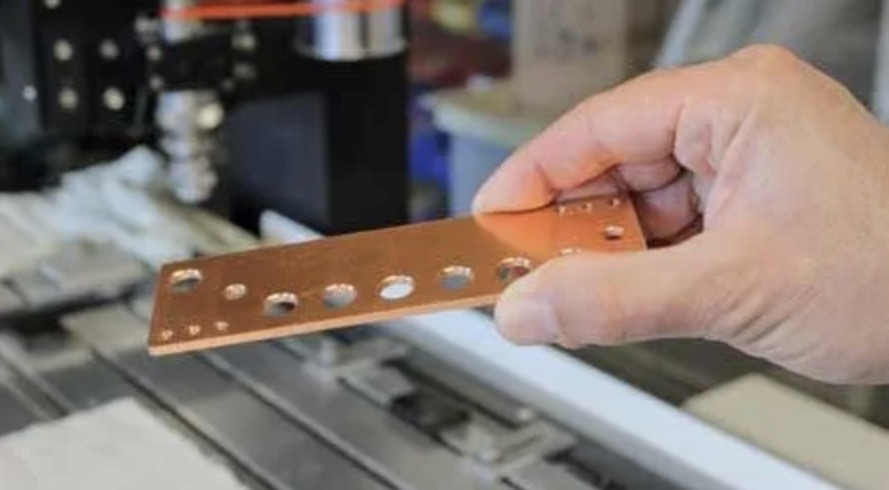

Le perçage de précision, trou après trou
Chaque perçage est positionné et calibré numériquement : diamètres constants, entraxes respectés, ébavurage soigné. Le cuivre, le laiton et l'aluminium n'ont pas de secret pour notre atelier.
- Barres de distribution électrique, platines et supports percés
- Tolérances serrées pour l'assemblage mécanique
- Petites et moyennes séries répétables